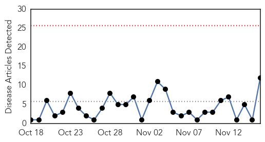
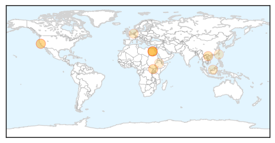

Yellow Fever
30-Day Web Trend
1 alerts, 0 warnings

30-Day Twitter Trend
0 alerts, 0 warnings

Article Locations

Article Confidences

Top Articles:
-
No articles found for Nov 16, 2015
Top Tweets:
-
No tweets found for Nov 16, 2015
Hepatitis
30-Day Web Trend
0 alerts, 0 warnings

30-Day Twitter Trend
0 alerts, 0 warnings

Article Locations
Article Confidences

Top Articles:
- 0.966
- Hepatitis B
- 0.877
- Hepatitis E virus superinfection and clinical progression in hepatitis B patients
- 0.877
- Hepatitis C investigations:2nd U.S. hospital may be affected; one-step testing developed
- 0.695
- Janssen Presents New Data Assessing OLYSIO® (Simeprevir) in Combination with Sofosbuvir in Genotype 4 Infected HCV Patients In Egypt
- 0.671
- Janssen Presents New Data Assessing OLYSIO® (Simeprevir) in Combination with Sofosbuvir in Genotype 4 Infected HCV Patients In Egypt
- 0.669
- Janssen Presents New Data Assessing OLYSIO® (Simeprevir) in Combination with Sofosbuvir in Genotype 4 Infected HCV Patients In Egypt
- 0.664
- Pharco Pharmaceuticals Inc. ha anunciado que ravidasvir ha alcanzado una tasa de curación del 100% cuando se combina con sofosbuvir en pacientes con VHC, sin cirrosis, de genotipo 4
- 0.649
- Janssen Presents New Data Assessing OLYSIO® (Simeprevir) in Combination with Sofosbuvir in Genotype 4 Infected HCV Patients In Egypt
- 0.649
- Janssen Presents New Data Assessing OLYSIO(R) (Simeprevir) in Combination with Sofosbuvir in Genotype 4 Infected HCV Patients In Egypt
- 0.611
- Large study sums up health issues for new child refugees to US
- 0.525
- Children’s Health Booklet errors draw criticism
- 0.521
- Global Partners Announce Donation of 500 Millionth Dose of Azithromycin, Marking Exceptional Progress to Help Alleviate the Suffering from Trachoma
Top Tweets:
-
No tweets found for Nov 16, 2015